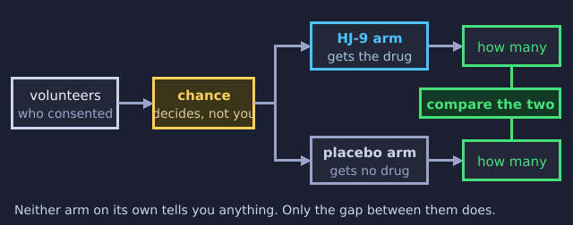
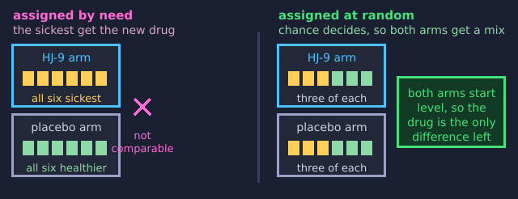
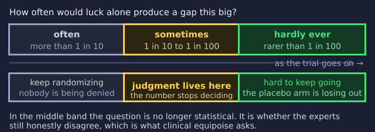

The Jekyll Protocol
You are shadowing Dr Helen Jekyll for a day while she runs a drug trial. Her great-grandfather was that Jekyll, the one with the serum.
Use → (or Next) to advance and to reveal points one at a time. F = fullscreen.

The Family Business
"Everyone assumes I went into medicine to make up for him," Helen says, nodding at the locket photo on her desk. "They're right."
- Her trial tests a new drug for people who cannot control their impulses. Henry worked on the same problem.
- Henry had an idea and a syringe, and he tested it on himself. Nobody else knew he was doing it.
- The serum released a second self, Mr Hyde, who did what Henry would not. There was nobody there to stop him.
- Helen has colleagues, a committee, and people watching. She also has a reason why it is fair to test a drug on somebody else.
Before Rounds
Five quick questions, with no right answers. Just say where you stand. You will see them again at the end.
Decision Point: Should She Flip the Coin?
Not graded, and asked before you know anything about trials. You will meet it again once you do.
What a Clinical Trial Actually Is
A trial is how you find out whether a new treatment really works.
- You give it to some people, give something else to others, and then compare.
- You need that comparison because you want the treatment to work, and wanting it changes what you notice.
- Henry drank his serum himself and wrote down how he felt. He was the only subject, and he was the one hoping.
Why One Patient Teaches You Nothing
One person cannot tell you whether a drug works, however carefully you watch them.
- People differ. Some recover on their own; some would have worsened whatever you gave them.
- With one patient you cannot tell which of those you are watching. With four hundred, the differences even out and what is left is the drug.
- So a trial needs a crowd. That is where the ethics get hard, because each of those people takes a risk that mostly helps somebody else.
- Henry had one subject: himself. Whatever happened that night, he could not have learned anything from it.
Try It: One Patient
Here is a patient with the illness HJ-9 is meant to treat. Give her the drug, then keep pressing to see other patients.
Try It: A Dozen Patients
One patient was not enough. Try twelve, and treat every one of them. Run it more than once.

The Control Group
A trial needs a second group to measure against. Each group is called an arm.
- The second arm gets a placebo, or the best treatment already available. Doctors call that the standard of care.
- Henry's serum seemed to work. But compared to what? He had no second arm at all.
The Shape of a Trial
Every trial in this lesson has the same five steps.

Why You Need the Second Arm
Without one, three other things can look exactly like a drug working.
- The illness may simply be running its course, and would have eased on its own.
- The placebo effect: people often feel better just from being treated at all.
- Regression to the mean: people enrol when they feel worst, and feeling worst is usually followed by feeling better anyway.
- Henry could not tell any of these apart from his serum, so he could not tell whether it was helping him or hurting him. He kept taking it.

Randomization
Letting chance decide who goes in which arm spreads the differences between people evenly. That includes the differences nobody thought of.
- Sicker patients, healthier ones, hopeful ones and doubtful ones all end up spread across both arms instead of clumping on one side.
- Henry's trial had one arm with one person in it. He was the researcher, the patient, and the judge of the result.
- There was nothing to spread out, and nobody to compare himself with.
Why Not Just Assign Them Sensibly?
Randomizing feels careless. Surely the sickest patients should get the new drug?

Try It: Both Ways
Twenty-four patients, half of them much sicker. HJ-9 genuinely works in both runs. Press the two buttons back and forth and watch what changes.
Two Ways to Compare
Chance decides who gets the drug and who gets the control, so the differences between people scatter evenly across both arms.
Helen's trial: patients randomized to drug or placebo by computer, not by hunch.
One subject picks himself and compares himself only to his own past. There is no second arm at all.
Henry's diary: "I took the draught, and felt at once a change." Compared to nothing.

Blinding
Knowing which arm you are in changes how you feel, and it changes how your doctor rates you. So trials hide it.
- Single-blind means the patient does not know which arm they are in.
- Double-blind means the doctor does not know either, so nobody's expectations can color how the symptoms get judged.
- Henry knew what he had taken and what he expected to feel, and he was the only one judging the result. He would have believed it worked whatever it did to him.
What These Tools Are Actually For
Why Bother With a Control?
Consenting to Research, Not Just Treatment
Helen's patients sign something Henry never offered anyone: research consent.
- It says plainly that the point of the trial is to learn something general. You might get the placebo, and the trial is not built around helping you.
- It guarantees an unconditional right to withdraw, at any point, without penalty.
- Skip this and patients fall into the therapeutic misconception: believing the trial exists to treat them.
Two Kinds of "Yes"
Chosen because it's believed to be your best option, tailored to your case.
"I recommend this because it's what's best for you."
You may get the drug, the control, or the placebo. The point is what everyone learns, not a benefit promised to you.
"You may get the study drug. You may get placebo. We won't know which until it's over."
"But This Is Supposed to Help Me"
Back to the Coin
This is the question you were asked before you knew what any of the machinery was for. If Helen already believes HJ-9 works, isn't it wrong to randomly deny it to half her patients?
- You now know what she would be denying them, and what she could not find out without denying it.
- That does not make the question go away. It is the central ethical puzzle of every controlled trial.
- Two philosophers gave two different answers, and the difference between them decides which trials may run at all.
Fried's Answer: Theoretical Equipoise
Charles Fried's standard asks about the individual physician's own confidence. It must be exactly balanced, a true 50/50.
- The trouble: this is almost impossibly fragile. One hunch, one half-remembered case, one gut feeling, and the 50/50 is broken.
- It is the physician's own private inner Hyde, whispering a lean. By this standard, a single whisper should end the trial.

Freedman's Fix: Clinical Equipoise
Benjamin Freedman's revision: forget any one doctor's internal balance. What matters is genuine, honest disagreement within the expert clinical community about which treatment is better.
- Individual physicians can have hunches. The trial is justified as long as the field, collectively, is genuinely split.
- This is the standard actually used to launch and run real trials.
Individual Balance vs Community Disagreement
Each physician's own subjective probability must sit at exactly 50/50.
Fragile: any personal hunch, however small, breaks it.
The expert clinical community, as a whole, must genuinely disagree.
Robust: individual hunches are fine as long as honest disagreement persists in the field.
Name the Standard
How Strong Is Strong Enough?
As a trial runs, the gap between the arms gets harder to explain away as luck. There is no line in nature that says when it stops being luck.

Run the Trial
Helen's trial of HJ-9 opens. More patients enroll between each look, and you decide at every one whether to keep randomizing.
Does the Disagreement Still Count?

Someone Has to Be Watching
Trials don't run blind to their own data forever.
- Interim analyses check the accumulating data at pre-planned points.
- Pre-set stopping rules say, in advance, what result would end the trial early.
- An independent Data and Safety Monitoring Board, or DSMB, reviews the unblinded data and decides. Not Helen, and not her team.
When the Balance Tips
If the results turn clearly one-sided, or a sign of harm appears, clinical equipoise has collapsed.
- The ethical duty flips: stop the trial early, unblind it, and offer the better treatment to everyone still enrolled.
- Once genuine disagreement is gone, carrying on randomizing patients is not rigour. It is withholding a known benefit.
No One Was Watching Henry
Henry Jekyll had no DSMB, no interim look, no pre-set line that would have ended things.
- Nothing was tracking the moment his private experiment turned from promising to catastrophic.
- The only person who could have called a stop was Henry, and by his own account he did not, until it was very nearly too late.
Why an Outside Board?
Checkpoint: The Middle Band

Is a Placebo Always Fair Game?
Not always. When an effective standard treatment already exists, many argue new drugs must be compared to that, not to nothing.
- Denying patients a treatment already known to work, just to get a cleaner comparison, can itself violate equipoise.
- The Declaration of Helsinki restricts placebo use for exactly this reason.
- It allows one narrow exception: a condition that is minor and short-lived, with participants watched closely throughout.
Placebo-Controlled vs Active-Controlled
The control arm receives an inert placebo. That is the cleanest test of whether the drug does anything at all.
Defensible when no proven effective treatment yet exists for the condition.
The control arm receives the current best-known treatment instead.
Required when an effective treatment already exists. Nobody should be denied it just for a cleaner comparison.
When Is a Placebo Arm Defensible?
Helen vs Henry
Run the checklist. Every safeguard Helen insists on is one her great-grandfather skipped entirely.
- A real control group. Randomization. Blinding. Research consent, not a signature he never sought.
- Clinical equipoise, established across a genuine panel of experts, rather than one man's private certainty.
- A DSMB watching for the exact moment to stop, where Henry had nobody watching at all.
- The machinery exists precisely because one Jekyll skipped every step of it.
Revisit Your Instincts
Here is where you started before rounds. Re-rate each one and see whether shadowing Helen shifted anything. Staying put is fine, so long as you can now say why.
End of Rounds
Helen locks the lab. In a drawer sits Henry's journal, his only record.
- Apparatus: controls, randomization, blinding, and enough patients to learn from.
- Research consent: the goal disclosed, the right to withdraw, the therapeutic misconception.
- Equipoise: theoretical (Fried) against clinical (Freedman, community disagreement).
- Monitoring: DSMBs and stopping rules fire the moment equipoise collapses.
- Placebo ethics: fair when nothing proven exists, not once something does.
Visit every slide, answer every question, and submit both belief probes.